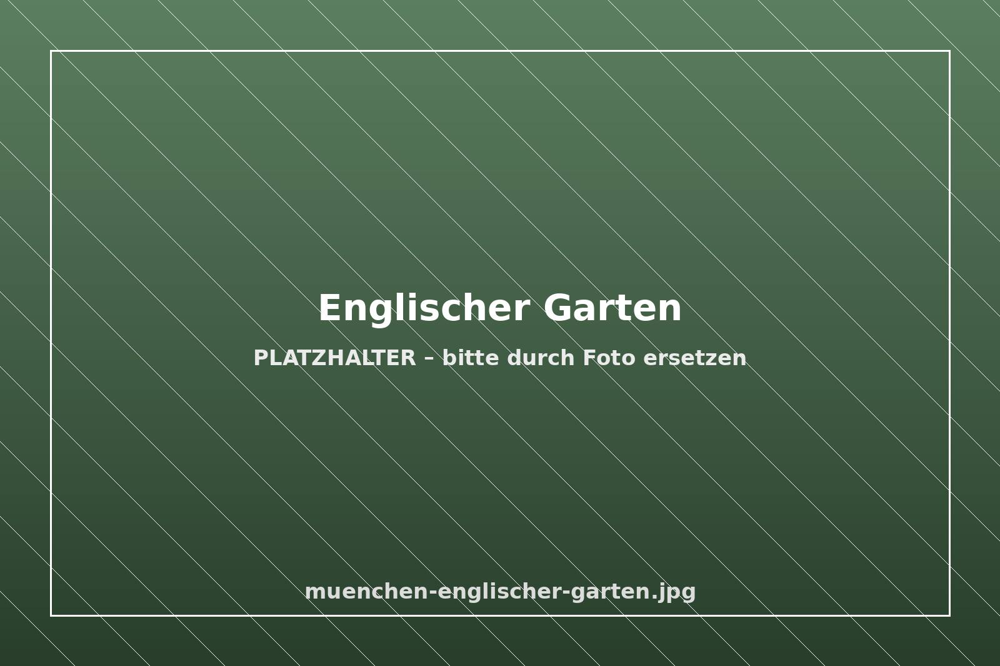

München & Events
Wann lohnt sich welche Reisezeit – und wann sollten Sie besser früh buchen? Ein Überblick über das Münchner Jahr.
Wichtig zu wissen: Zu Messen und Großveranstaltungen ist die Stadt oft ausgebucht. Wer früh und direkt beim Hotel bucht, bekommt die besseren Zimmer und die besseren Preise.
Das Münchner Veranstaltungsjahr
Frühjahr
| Starkbierzeit (März) | Starkbieranstiche in den großen Bräuhäusern, u. a. am Nockherberg. |
|---|---|
| Frühlingsfest auf der Theresienwiese (April/Mai) | Die „kleine Schwester der Wiesn“ – zu Fuß von uns erreichbar. |
| Auer Dult Maidult (Ende April/Mai) | Traditioneller Markt am Mariahilfplatz. |
| Frühjahrsmessen | Wechselnde Fachmessen auf dem Messegelände in Riem. |
Sommer
| Filmfest München (Juni/Juli) | Kinofestival in der ganzen Stadt. |
|---|---|
| Tollwood Sommerfestival (Juni/Juli) | Musik, Theater und Markt im Olympiapark. |
| Opernfestspiele (Juli) | Festspielzeit an der Bayerischen Staatsoper. |
| Sommer im Englischen Garten | Biergarten am Chinesischen Turm, Surfen am Eisbach. |
Herbst
| Oktoberfest (September/Oktober) | Die Wiesn dauert 16 bis 18 Tage und endet traditionell am ersten Oktoberwochenende. Die Theresienwiese erreichen Sie von uns in gut 20 Minuten zu Fuß. |
|---|---|
| Lange Nacht der Museen (Oktober) | Das Kunstareal liegt praktisch vor der Haustür. |
| München Marathon (Oktober) | Ziel im Olympiastadion. |
| Herbstmessen (Oktober/November) | Große Fachmessen wie EXPO REAL oder die Elektronikmessen. |
Winter
| Christkindlmarkt am Marienplatz (Ende November bis 24. Dezember) | Der große Weihnachtsmarkt in der Altstadt. |
|---|---|
| Tollwood Winterfestival (Ende November bis Silvester) | Auf der Theresienwiese. |
| Weitere Weihnachtsmärkte | Mittelaltermarkt am Wittelsbacherplatz, Märkte in Schwabing und Haidhausen. |
| Wintermessen (Januar/Februar) | Große Fachmessen in Riem, teils im Zwei-Jahres-Rhythmus. |
Alle Angaben sind Übersichtswerte ohne Gewähr. Die genauen Termine veröffentlichen die Veranstalter jedes Jahr neu – bitte dort prüfen.
Wann Sie früh buchen sollten
- Oktoberfest Die nachgefragteste Zeit des Jahres – je früher, desto besser.
- Große Fachmessen Messewochen sind in der ganzen Stadt schnell ausgebucht.
- Adventswochenenden Christkindlmarkt und Tollwood ziehen viele Kurzreisende an.
- Feiertagsbrücken im Frühjahr Lange Wochenenden sind beliebt.
In diesen Zeiten gilt besonders: direkt buchen ist günstiger, weil keine Portalprovision im Preis steckt.
Sehenswert – das ganze Jahr



- Kunstareal mit den Pinakotheken – ca. 10–15 Minuten zu Fuß
- Residenz, Hofgarten und Odeonsplatz
- Deutsches Museum auf der Museumsinsel
- Olympiapark und BMW Welt im Norden der Stadt
- Schloss Nymphenburg im Westen